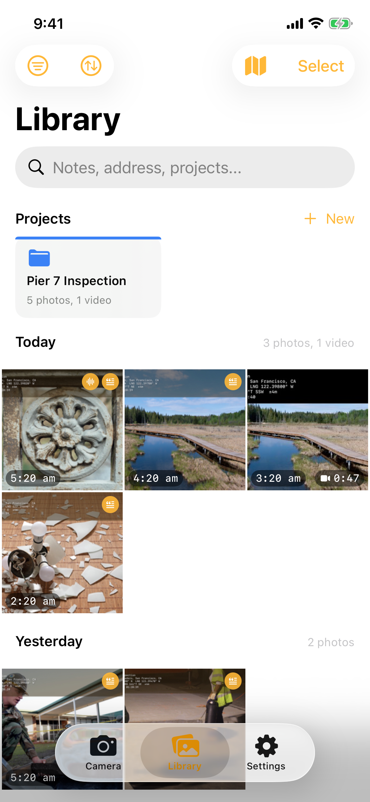
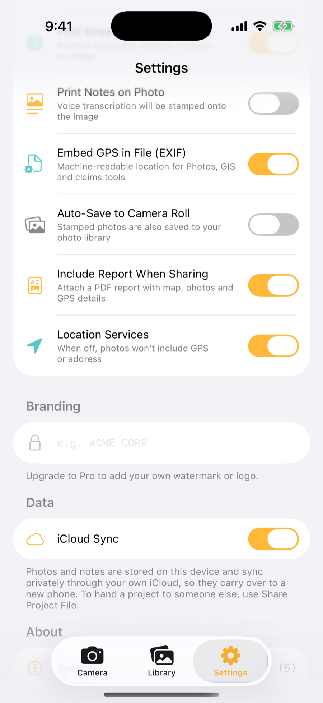
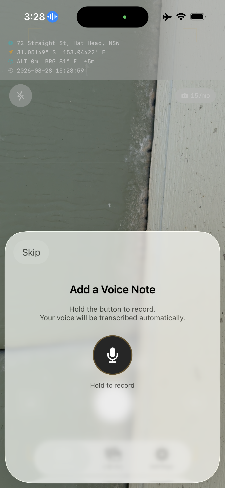
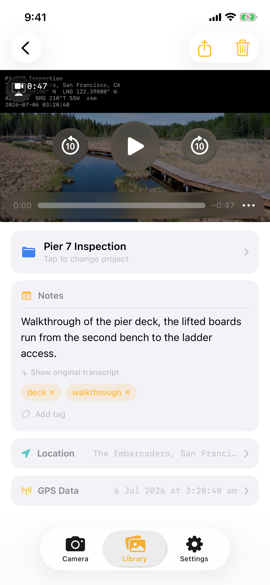
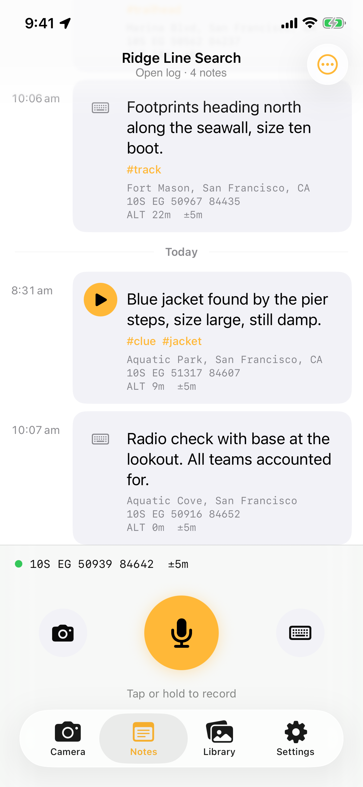
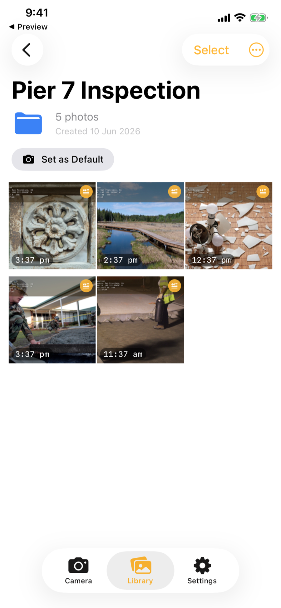
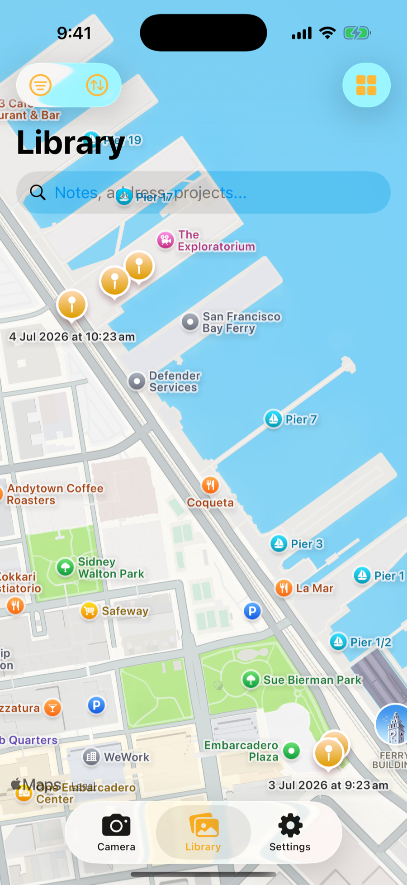
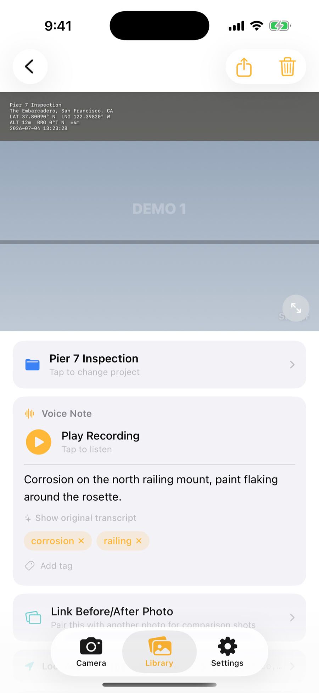
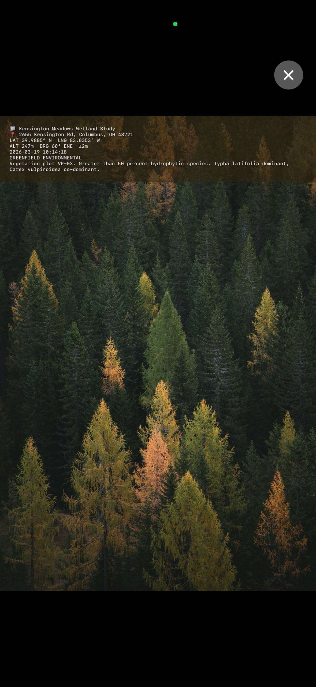

Stampr — Help & User Guide
Everything you need to know to get the most out of Stampr. This guide covers Stampr 2.8 for iPhone and iPad.
Contents
- Getting Started
- Using the Camera
- Voice Notes & AI Cleanup
- Stamped Video
- Field Notes
- Photo Library
- Photo Details
- Projects
- iCloud Sync
- Sharing, Reports & Data Export
- Project Files — Team Handoff
- Settings & Customisation
- Stampr Pro
- Shortcuts & Search
- Permissions
- Frequently Asked Questions
- Contact Support
Getting Started
Stampr is a GPS field camera designed for professionals who need location-stamped photos and video with metadata. It burns GPS coordinates, altitude, bearing, street address, and optional voice notes directly onto your photos — and embeds the GPS data into the photo file itself (EXIF), so your shots pin correctly in Photos, GIS software, and claims tools.
The app has three tabs, plus a fourth if you turn on Field Notes:
- Camera: Take GPS-stamped photos and videos with a live metadata overlay.
- Notes (optional): Speak or type GPS-stamped notes without a photo, kept in an open log. See Field Notes.
- Library: Browse, search, and organize your photos, videos, and notes by project and tags.
- Settings: Customise the stamp format, toggle features, and manage your Pro purchase.



Grant Permissions
When you first open Stampr, allow access to your camera and location. Microphone access is needed only if you use voice notes or field notes, or record video. You can change these anytime in iOS Settings.
Take Your First Photo
Point the camera and tap the shutter button. Stampr saves the photo immediately and stamps it with your GPS data, address, and timestamp — all frozen at the exact moment you pressed the shutter.
Add a Voice Note (Optional)
After each photo, hold the microphone button to record a voice note. Stampr transcribes it on-device, and on supported devices an on-device AI tidies the dictation into a clean caption with suggested tags. Prefer fully hands-free? Turn on Hands-Free mode in Settings and Stampr records automatically after every shot, stopping when you stop talking.
Review in Library
Switch to the Library tab to see all your stamped photos. Tap any photo for full details, metadata, and sharing options.
Using the Camera
The Camera tab is where you take GPS-stamped photos and videos. The live stamp overlay at the top shows exactly what will be burned onto your image.
Stamp Overlay
The live GPS data is displayed at the top of the camera view. This is exactly what will be stamped onto your photo. It updates in real time as you move. The overlay shows:
- Street address (reverse-geocoded)
- GPS coordinates — in Decimal, DMS, UTM, or MGRS format
- Altitude (metres or feet), bearing (true or magnetic north), and accuracy
- Date and time
The accuracy readout is colour-coded: green within 5 m, amber within 15 m, red beyond that. If there's no GPS fix yet, the overlay shows "Acquiring GPS…" — and photos taken without a fix are stamped "NO GPS FIX" rather than misleading zero coordinates.
Photo / Video Mode
Switch between PHOTO and VIDEO with the mode picker above the shutter. See Stamped Video below for details.
Zoom & Lenses
Pinch to zoom or tap the preset buttons above the shutter. On iPhones with multiple rear cameras you also get a 0.5× ultra-wide preset, and zooming switches to the telephoto lens automatically for true optical quality — not just a digital crop.
Focus & Exposure
Tap anywhere in the viewfinder to focus and set exposure on that point. Long-press to lock focus and exposure (AE/AF lock) so they stay put while you reframe, useful for high-contrast scenes or repeated shots of the same subject.
Front Camera
Tap the camera-flip button to switch between the rear and front cameras, handy for documenting yourself on site or capturing awkward angles.
Volume-Button Shutter
Press either volume button to take the photo (or start and stop a video), just like the built-in Camera app. Great with gloves or when holding the phone at arm's length.
Level Indicator
A subtle bubble level in the centre of the viewfinder shows when your horizon is straight. It turns green when you're level within 1.5°, in both portrait and landscape, and gives a small haptic tick as it locks on. Great for straight-on documentation shots. You can turn it off in Settings.
Require GPS Fix
If your work demands coordinates on every shot, enable Require GPS Fix in Settings. The shutter will then wait for a GPS lock, with a "Capture Anyway" escape hatch if you need the shot regardless.
Flash & Resolution
Tap the flash icon in the top-left corner to cycle the flash through off, auto, and on. Enable Maximum Resolution in Settings to capture at your iPhone's full sensor resolution (larger files).
Voice Notes & AI Cleanup
Voice notes add context that would be tedious to type — site conditions, observations, measurements, or instructions. Stampr transcribes them on-device and can burn the text directly onto the photo.

Three Voice Modes
Choose how voice notes work in Settings → Capture → Voice Notes:
- Prompt After Photo (default) — After each shot, a sheet appears. Hold the microphone button to record, release to stop.
- Hands-Free — Recording starts automatically after every shutter press and stops by itself about two seconds after you stop talking. From pocket to documented photo without touching the screen — ideal with gloves on.
- Off — No voice prompt. You can still add notes later from the photo detail screen.
AI Note Cleanup
On devices with Apple Intelligence, Stampr's AI Note Cleanup tidies your dictation into a clear, professional caption and suggests up to five searchable tags, entirely on-device. "um so there's a crack on the uh north wall" becomes "Crack on north wall." Cleanup is strictly grounded: it only removes dictation artifacts and can never invent content. Every cleaned note is checked word by word against your transcript, and if anything doesn't match, Stampr falls back to the verbatim transcript. The verbatim transcript is always kept too: tap Show original transcript on any photo to see exactly what was said.
In the voice note sheet you can flip between the AI-cleaned version and the original before saving. On devices without Apple Intelligence, the verbatim transcription is used as-is.
Stamped Video
Record site walkthroughs with the GPS stamp burned onto the footage. Videos live right alongside your photos in the Library, each with its own detail view, a place in its project, and an entry in your PDF reports.
Switch to VIDEO
Tap VIDEO in the mode picker above the shutter. The shutter button turns red.
Record
Tap to start recording (with sound), tap again to stop. Recordings cap at 3 minutes. The GPS data, address, bearing, and time are frozen at the moment recording starts and burned into every frame, along with your watermark or logo.
Saved to your Library
The stamped clip saves straight into your in-app Library ("Video saved to Library"), where it shows in the grid with a duration badge. Its soundtrack is transcribed on-device into a searchable, editable note, exactly like a photo voice note.

Field Notes
Some things worth recording have no picture: a radio check, the fork you took, a measurement, what a witness said. Field Notes lets you speak or type a note without taking a photo, and stamps each one with the time and your GPS position, just like a photo. Notes go into an open log that you keep for a whole job or search until you close it, together with the photos and videos you take along the way. Field Notes arrived in Stampr 2.8.

Turn It On
Field Notes is off by default. Go to Settings → Capture and turn on Field Notes. A Notes tab appears between Camera and Library.
Start a Log
On the Notes tab, tap Start Log. It's named with the date and time, like "Log 22 Oct, 8:05 pm", and the name comes up selected, so you can type the job or search name straight over it. Pick a colour and tap Start. Until you close it, every note, photo, and video goes into this log.
Speak or Type
Tap the microphone and talk, then tap again to save. Each note lands in the log with its time and position, and turns into text a moment later.
Close and Share
When the job or search is over, open the ··· menu at the top right and choose Close Log, then Close and Share Report to send the whole log as a PDF report.
Ways to Record
- Tap the microphone to start, and tap again to save.
- Hold it while you talk, and let go to save.
- Tap the keyboard button to type a note, then Save Note.
- Say "Record a note in Stampr" to Siri, or set the Action button to Record Field Note. Stampr opens on the Notes tab already recording; ask or press again to save. See Shortcuts & Search.
- Touch and hold the Stampr icon on the Home Screen and choose Record Note.
While a note records, the screen stays on, and you feel a tap as it starts and as it saves. Tap the X beside the microphone to throw a recording away. A note can run for up to five minutes: the timer shows the limit in the last 30 seconds, and at five minutes Stampr saves the note, so you can tap the microphone to carry on in a new one.
Time and Place
Each note is stamped with where you were when you started it: coordinates in your chosen format, altitude, and GPS accuracy, plus the street address when Print Address on Photo is on and Stampr can look it up. There's no compass bearing on a note, as you weren't aiming the camera at anything. The strip above the microphone shows your current position; when its dot is green, that's the position your next note gets.
If there's no fresh fix when you start, Stampr uses the first one that arrives within a minute. If none arrives, the note is still kept and marked NO GPS FIX, the same as a photo. The strip says why there's no position (Waiting for GPS…, Location is off in Stampr, Location access is off for Stampr, or Stampr can't use your location yet) and offers a button to fix it.
From Speech to Text
Notes are turned into text on the phone by Apple's on-device speech recognition, as photo voice notes are, one note at a time, so a quick run of notes simply queues up. Nothing is uploaded. A note waiting its turn shows Transcribing…. The first time, iOS may need to download its speech model; the recording is kept meanwhile. If a note can't be transcribed, it keeps its recording and Stampr tries again the next time it opens. You can also open the note and tap Transcribe, or Try Again if no speech was recognised.
On devices with Apple Intelligence, AI Note Cleanup tidies notes and suggests tags, as it does for photos. The original transcript is always kept: tap Show original transcript on the note.
The Open Log
A log is a project that stays open: while it's open, every new note, photo, and video goes into it, so a whole search reads as one timeline, oldest first, with a divider for each day. The Notes tab shows the open log, with its name and a count at the top and the newest entry at the bottom. The ··· menu manages it:
- Start a New Log…: begin another log, which closes the current one.
- Switch Log… (or Open a Log… when none is open): open an existing log. Any project can be one.
- Close Log: new notes, photos, and videos stop going into it. It stays in the Library as a project, and you can open it again any time.
- Export PDF Report and Share Log as Text: see Sharing Notes below.
The camera button beside the microphone takes you to the camera, and the photos and videos you take go into the open log. Notes made with no log open are kept too, under No Project, and can be filed later.
Reading and Editing a Note
Tap the play button on a note to hear it right in the log, or tap the note to open it. On a note's screen you can play the recording, read its stamp, correct the text (the original transcript stays one tap away), add or remove tags, move it to another project or log, see where it was taken on a map with its address, coordinates, UTM and MGRS / USNG references, altitude, and accuracy, open it in Maps, share it, or delete it. In the log, touch and hold a note for Copy Text, Share Note, and Delete Note.
Notes also appear in the Library and in their project, alongside your photos and videos, and Spotlight finds them by their words. A project with notes can be read as a log too: tap the list button at the top of the project (Show as log).
Sharing Notes
- PDF report: ··· → Export PDF Report, or Close and Share Report as you close the log. Notes sit among the photos and videos in time order, marked VOICE NOTE or TYPED NOTE, with their words, tags, and location, and with pins on the map overview. A report of notes alone is titled "Stampr Field Notes".
- As text: ··· → Share Log as Text sends the whole log, oldest first, as plain text you can paste into a message, an email, or an incident record. One note goes the same way from its screen with Share as Text, or with its recording attached using Share with Recording.
- With photos: share a selection from the Library that includes notes, and the notes travel as a Notes.txt file beside the photos and report.
- Data export: CSV, KML, and GeoJSON exports include notes, so a search's notes can go straight into Google Earth or a GIS tool.
- Project files: Share Project File includes notes and their recordings.
With iCloud Sync on, notes and their recordings sync to your other devices along with your photos. Turning Field Notes off hides the Notes tab and the Home Screen quick action; notes you've already made stay in the Library. Asking Siri or pressing the Action button for a note turns Field Notes back on.
Photo Library
Browsing Photos & Videos
The Library tab shows all your photos and videos in a grid sorted by date, newest first by default. Videos appear alongside photos with a duration badge in the corner. Switch to oldest-first with the sort button (the up-down arrows) in the toolbar. Use the filter menu to narrow by time period (including a Yesterday filter for writing up the previous day's work), project, or tag. Use the search bar to find captures by notes (including the original transcript), tags, address, or project name.
If you use Field Notes, your notes appear in the same grid as cards showing their words, a microphone or keyboard icon, and the time. Tap one to open it. Search finds them by their words too.

Map View
Toggle the map icon to see your photos plotted geographically. Tap any pin to open that photo's details. Only photos with valid GPS coordinates appear on the map, along with any field notes that have a position.

Selecting Multiple Photos
Tap "Select" to enter selection mode. Tap photos to select them, then share or delete the selection using the toolbar at the bottom. Deleting asks for confirmation first and tells you exactly how many photos are affected, so a stray tap can't wipe out your work.
Photo Details
Tap any photo in the Library to see its full metadata. The detail view shows everything that was captured with the photo.


The detail view includes:
- Stamped photo — The full image with GPS data burned on; tap for fullscreen
- Project — Tap to change or assign a project
- Notes & tags — AI-cleaned caption (editable), the original transcript, and tag chips you can add or remove
- Before / After — Link this photo with another to document repairs; share the pair as a side-by-side composite
- Location — Interactive map, street address, coordinates, and the UTM reference
- GPS Data — Altitude, bearing, tilt/roll, accuracy, and capture time
Before / After Pairs
Tap Link Before/After Photo to pair two photos — the older one automatically becomes the "before". Once linked, the share menu gains Share Before/After, which exports a labelled side-by-side composite image. Perfect for documenting repairs.
Sharing One Photo
The share button offers Share Stamped Photo (with the PDF report), Share Original (the unstamped capture), and Share Before/After when the photo is paired.
Stamped Photo Example
Here is what a fully stamped photo looks like. The GPS data, address, project name, timestamp, and voice note transcription are all burned directly onto the image — and the same data is embedded invisibly in the file's EXIF metadata.

The stamp includes the project name, street address, GPS coordinates, altitude, bearing, date, watermark, and any voice note transcription — all configurable in Settings.
Projects
Projects help you organize photos by job site, inspection, or any grouping that makes sense for your work.
Creating a Project
In the Library tab, tap "+ New" next to the Projects row. Give it a name, pick a colour, and optionally set it as your default project.
Assigning Photos
From the photo detail screen, tap the project card to move a photo to a different project or remove it from a project. The stamp on the photo updates automatically to reflect the new project name.
Default Project
Set a default project so all new photos are automatically assigned to it. This is useful when you're on-site and want every photo tagged to the current job. An open field-notes log is your default project; see Field Notes.
Reading a Project as a Log
A project with field notes can also be read as a log: tap the list button at the top of the project (Show as log) to see its notes, photos, and videos as one timeline, oldest first. Tap it again (Show as grid) to go back to the grid.
Renaming & Deleting
Open the project menu to rename or delete. After renaming, Stampr asks if you want to update the project name on all existing photos. When deleting, you can keep the photos unassigned or delete them too.
iCloud Sync
Your photos, projects, voice notes, and field notes sync through your own private iCloud, so your Stampr library carries over automatically when you set up a new iPhone (or between your iPhone and iPad signed into the same Apple Account).
- It's your iCloud, not ours. Everything syncs through the private iCloud database attached to your Apple Account. Nothing is shared with us. We cannot see your photos, notes, or locations, and there is no Stampr account to create.
- On by default. Sync is enabled out of the box. It needs you to be signed into iCloud on the device and counts against your own iCloud storage.
- Turn it off anytime. Go to Settings → Data → iCloud Sync. When it's off, photos and notes stay only on the device and are not backed up to iCloud.
- Restart to apply. After flipping the toggle, Stampr shows a "Restart Stampr to apply" note. Quit and reopen the app for the change to take effect.
- Videos stay on the device. Because clips are large, videos are kept in the app's Library on the device that recorded them and are not carried by iCloud Sync. They are included in your normal encrypted device backup. To keep a copy elsewhere, turn on Auto-Save to Camera Roll.
Project Files — Team Handoff
New in 2.0: hand a whole project to a teammate as a single file — no accounts, no cloud service.
Share the Project File
Open the project, tap the menu, and choose Share Project File. Stampr packs every photo (stamped and original), voice note, field note with its recording, and all metadata into one .stamprproj file you can AirDrop, message, or email.
Open on the Other Device
On the receiving iPhone or iPad, just tap the file — in AirDrop, Files, or Mail — and it opens straight into Stampr. (You can also use Import Project… in the Library's filter menu.)
Merge Without Duplicates
Importing merges by photo identity: photos you already have are skipped, new ones are added to the matching project. Trade files back and forth as a job progresses, and you'll never get duplicates. Field notes merge the same way; the receiving iPhone needs Stampr 2.8 or later to bring them in (older versions import the photos and skip the notes).
Settings & Customisation
The Settings tab controls how Stampr stamps, captures, and shares.
| Setting | Description | Default |
|---|---|---|
| Stamp Text Size | Font size of the stamp overlay (8–24pt) | 12pt |
| Coordinates | Decimal Degrees, DMS, UTM, or MGRS | Decimal |
| Units | Metric (m) or Imperial (ft) for altitude and accuracy | Metric |
| North Reference | True or magnetic north — bearings are marked °T or °M | True |
| Voice Notes | Off, Prompt After Photo, or Hands-Free | Prompt |
| Field Notes | Adds the Notes tab for GPS-stamped voice or typed notes without a photo, kept in an open log | Off |
| AI Note Cleanup | On-device AI tidies dictation and suggests tags | On* |
| Require GPS Fix | Block the shutter until coordinates are locked | Off |
| Maximum Resolution | Capture at the sensor's full resolution | Off |
| Level Indicator | Bubble level in the viewfinder | On |
| Print GPS on Photo | Include coordinates and altitude on the stamp | On |
| Print Address on Photo | Include street address on the stamp | On |
| Print Notes on Photo | Burns voice transcription onto the stamp | Off |
| Embed GPS in File (EXIF) | Machine-readable location inside the photo file | On |
| Auto-Save to Camera Roll | Also copy stamped photos and videos to the Photos app | Off |
| Include Report When Sharing | Attach the PDF report with map and photos | On |
| Watermark / Logo | Custom text or logo branding on photos and reports (Pro) | None |
| iCloud Sync | Sync photos, projects, voice notes, and field notes through your private iCloud (restart to apply) | On |
| Location Services | Enable GPS, address, and compass data | On |
* AI Note Cleanup requires a device with Apple Intelligence; on other devices the verbatim transcription is used.
Stampr Pro
Stampr includes 15 free photos per month. To unlock unlimited photos and remove the watermark, purchase Stampr Pro, a one-time payment with no subscription. Field notes are free and unlimited on every plan, and never count toward the 15.
Restoring Your Purchase
If you reinstall the app or switch devices, go to Settings and tap "Restore Purchase". Your Pro access will be restored automatically via the App Store. Make sure you're signed into the same Apple ID you used for the original purchase.
Shortcuts & Search
Action Button & Siri
Stampr provides a Take Stamped Photo action you can assign to the Action button (iPhone 15 Pro and later) or trigger with Siri — from pocket to a stamped capture in one press. It also works in the Shortcuts app for custom automations.
A second action, Record Field Note, opens the Notes tab already recording a field note; run it again to save the note. Assign it to the Action button in iOS Settings → Action Button → Shortcut, or say "Record a note in Stampr" (also "Take a Stampr note"). It switches Field Notes on if it was off.
Home Screen Quick Action
While Field Notes is on, touch and hold the Stampr icon on the Home Screen and choose Record Note to open the Notes tab already recording.
Spotlight
The notes, addresses, and tags on your photos, videos, and field notes are indexed in iOS Spotlight search. Swipe down on your home screen, search a phrase from a note, and tap the result to jump straight to it in Stampr.
iPad
Stampr 2.0 runs natively on iPad with a layout built for the larger screen — the same library, projects, reports, and project-file import.
Permissions
Camera
Required to take photos and videos. If access was declined, the viewfinder shows a shortcut to enable it in iOS Settings.
Location
Used to stamp GPS coordinates, altitude, bearing, and street address onto photos and videos, and the position onto field notes. You can disable this in Settings if you don't need location data.
Microphone
Needed for voice notes, field notes, and video sound. Only used while recording. You can disable voice recording in Settings, and still type field notes without it.
Speech Recognition
Used to transcribe voice notes and field notes into text on-device. Your audio is not sent to external servers.
Photo Library (Add)
Only needed for "Auto-Save to Camera Roll", which copies your stamped photos and videos to the Photos app. Stampr keeps every capture in its own Library without it.
Frequently Asked Questions
Where are my photos stored?
Can I record a note without taking a photo?
Do my photos sync between my iPhone and iPad?
Can Top 7 Systems see my synced photos?
Can I change the stamp after taking a photo?
What does the AI Note Cleanup need?
Does Stampr send my location data anywhere?
What are UTM and MGRS formats?
Why is the address not showing?
Can I use Stampr offline?
How do I share photos with the GPS report?
Hands-free mode stops too early (or too late) on a noisy site
My video saved without a stamp / I can't find my video
I purchased Pro but it's not showing. What do I do?
Is my voice recording data sent to Apple or any server?
Still need help?
Email us at support@top7systems.net and we'll get back to you within 48 hours.